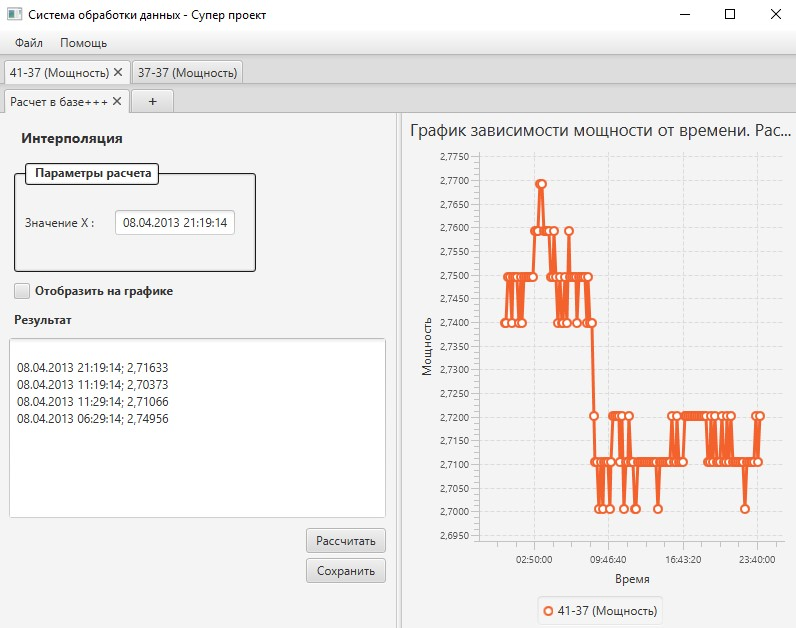
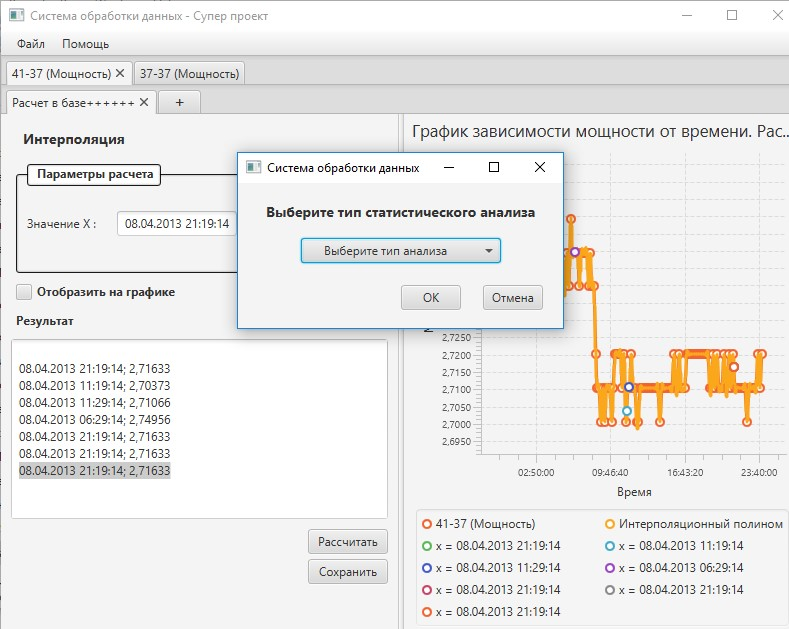

На рисунке 4 показан пример проекта. Проект включает в себя вкладки с выборками, а также вкладки с расчетами, относящиеся к конкретной выборке.
Рисунок 4. Пример проекта
В системе существует 7 типов анализа:
Добавление новой вкладки для анализа осуществляется при помощи нажатия на кнопку «+» в ряду с расчетами. После этого появляется всплывающее окно, где необходимо выбрать конкретный тип анализа (см. рисунок 5).
Рисунок 5. Работа с проектом
Для расчета необходимо указать все необходимые параметры расчета, указанные в рамке в левом верхнем углу, а также нажать на кнопку «Рассчитать». Результат будет выведен в окне ниже. Если установить флаг «Отобразить на графике», то результат будет не только выведен в соответствующем окне, но и будет отображен на графике. Это также можно увидеть на рисунке 5.
По окончании работы с проектом, его необходимо сохранить, выбрав в меню «Файл» пункт «Сохранить проект».
Система предоставляет гибкий механизм работы с графиком. Возможности, предоставляемые системой описаны в таблице 1.
| Элемент управления | Действие | Описание |
|---|---|---|
| Колесо мыши | Крутить вперед | Приближает график с центрированием в месте нахождения курсора мыши |
| Крутить назад | Отдаляет график с центрированием в месте нахождения курсора мыши | |
| Правая кнопка мыши | Зажать, двигать мышь | Перемещение графика |
| Левая кнопка мыши | Зажать на точке, двигать мышь | Перемещение точки графика |
| Двойной щелчок | Масштабирование графика под текущий размер окна | |
| Выделение области | Масштабирование выбранной области под текущий размер окна |